Case Study: Mette Theilmann
Building the brand copy from scratch for Mette's new website
I joined in the business development stages of Mette's new business, sitting in on the first brand platform development meetings, mostly as an observer taking notes as Mette candidly spoke about what this project meant to her and where she wanted it to go. Being involved from these early stages was really valuable in getting to know Mette's unfiltered voice and the very personal story behind the work, but also being able to input with questions that ended up influencing the direction the business took.
One of the biggest challenges we had was how to describe a coaching business without using any coaching language, since there were specific requirements from the state's business registry on how we could legally describe the company. This meant that we had to break down every aspect of the service to its foundation, getting to the essence and building a new understanding of what it was rather than falling back on assumptions or typical vocabularies.
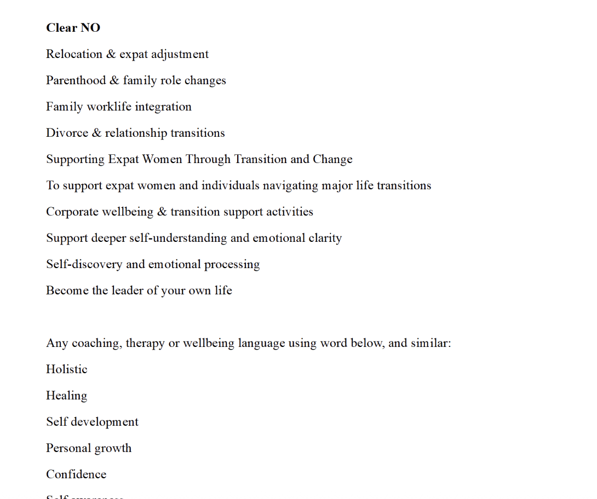
List of words we knew we couldn't use
At this stage, Mette was an overflowing pot of ideas that could barely contain the inspiration she had. She wrote pages and pages with notes and research, which landed in my email inbox each morning which I had the job of digesting and organising. It seemed there was enough to fill volumes, but instead I had to whittle it down to a condensed few paragraphs.
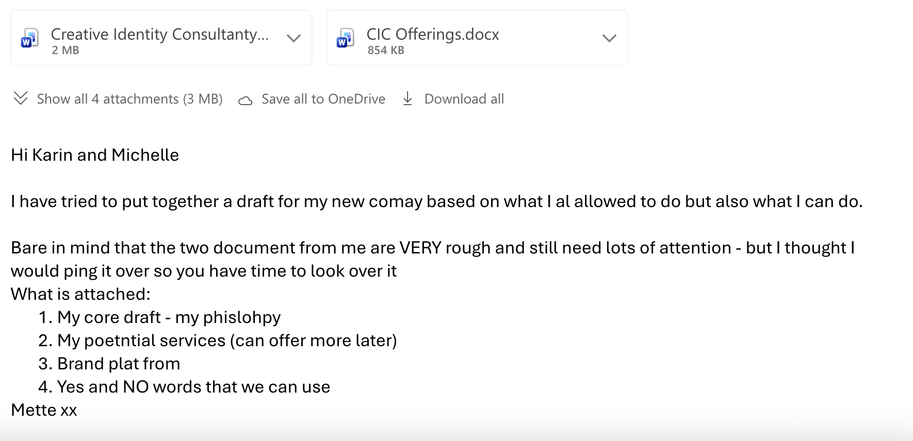
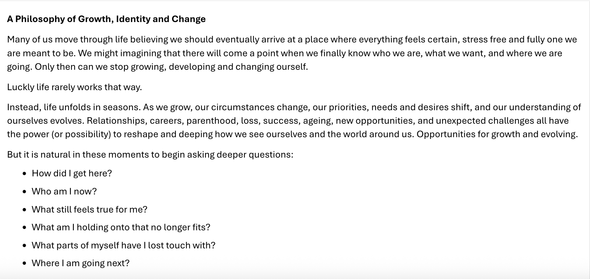
Lots of documents, ideas and concepts.
Over email correspondence, I gently challenged some of Mette's ideas, not because I thought they were lacking but because I felt there was unexplored depth to the work to still bring out. After a few rounds of questioning and answering, we finally had the material we needed to get started.
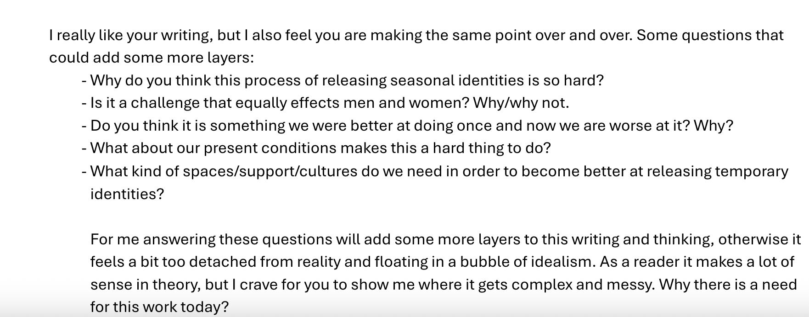
A lot of highlighting, post-it notes and draft writing later, we were getting closer to what felt like a copy that allowed Mette's rich philosophy and research to shine through without overwhelming her audience.
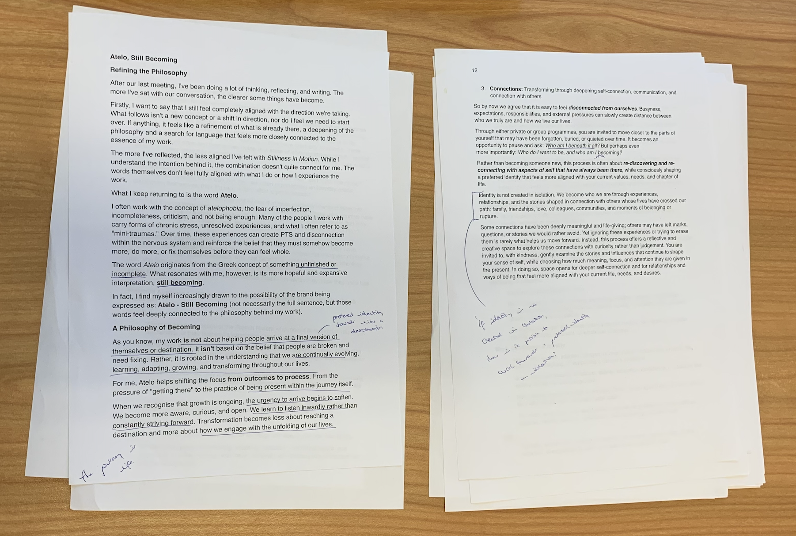
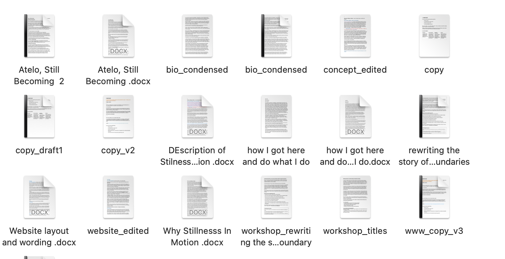
Desktop full of files
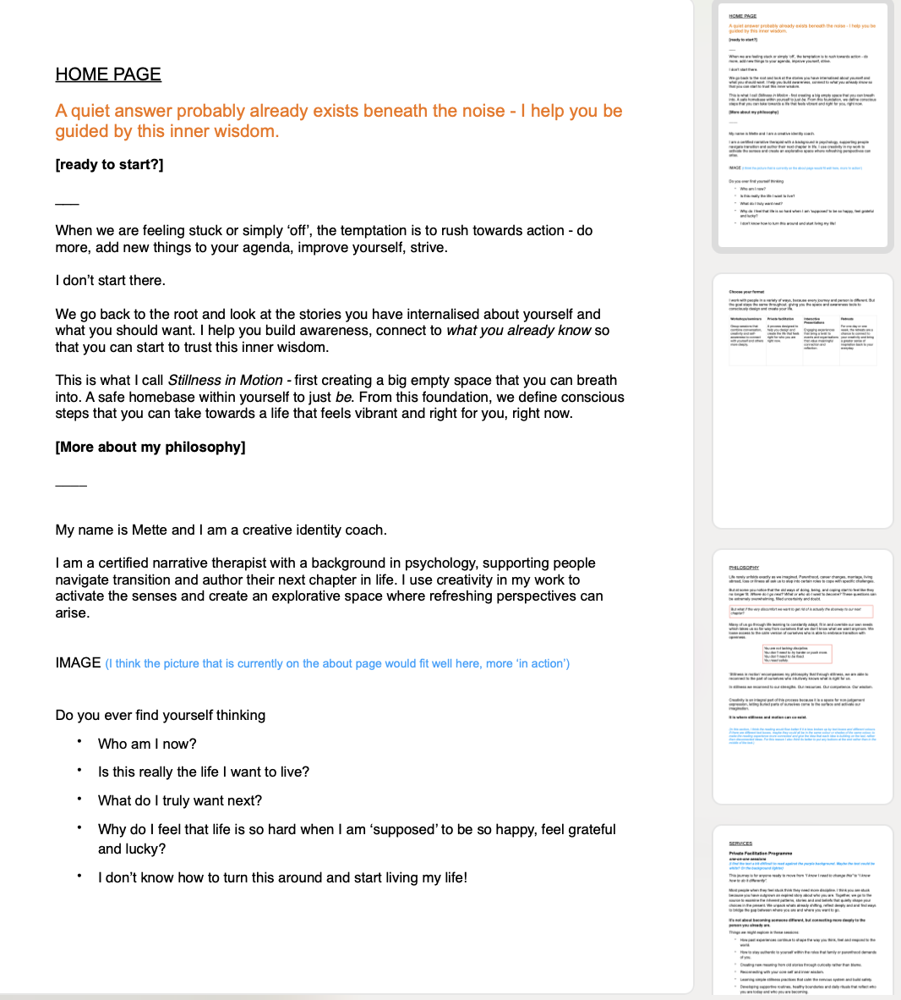
One of the many drafts
The final step was to find a tagline that really captured the work, which in this case happened very collaboratively on a whatsapp chat, each of us making micro adjustments to each word, until we had the final version.
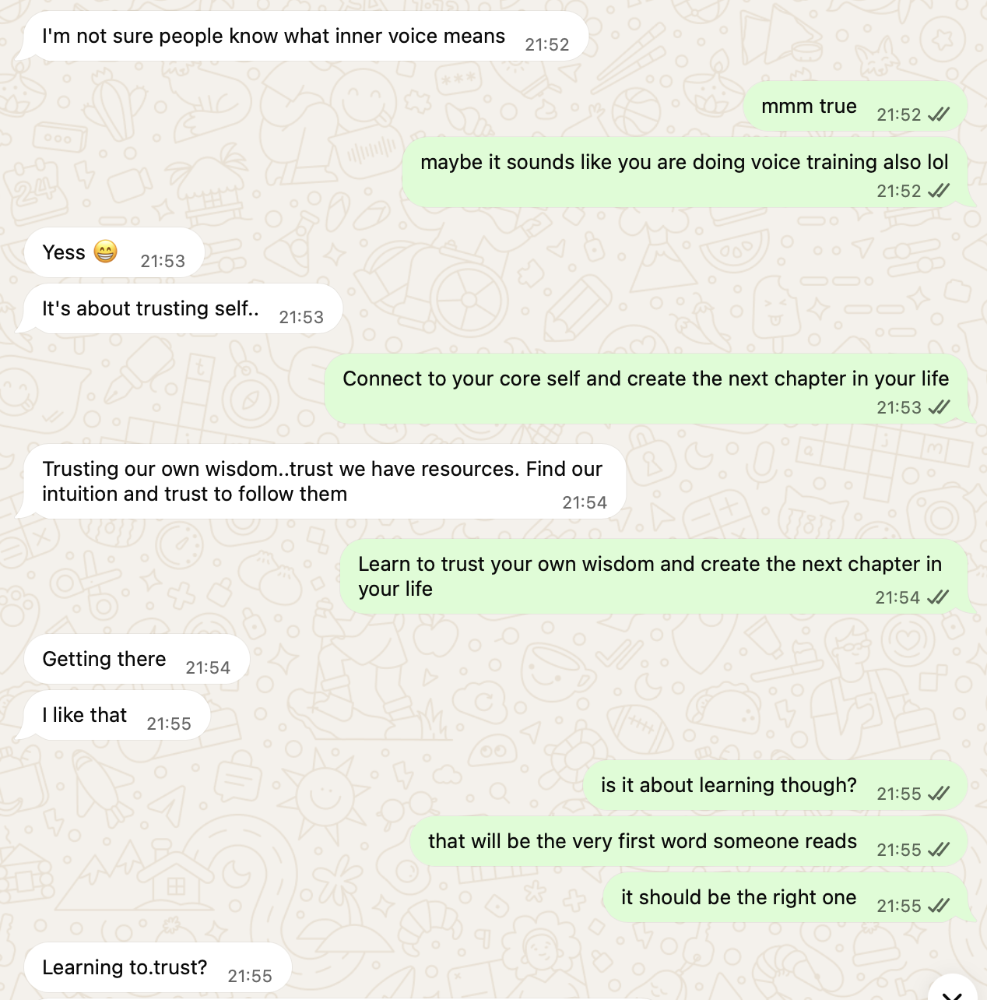
Since launching the business and the new website, I have continued developing new workshops and retreats for Mette. A recent project we created together and launched was her new workshop: Embody your Inner Witch. The process went a little like this:
1. Mette sent me a document of her ideas, bullet points, inspirations and notes. I always tell my clients that I prefer a messy and unedited document written in your voice rather than a very polished impermeable text generated with chat gpt. It lets me really feel YOU in the text in all your quirks and character.
2. I read through this document closely, and started collecting my initial ideas for how to push this concept further. Mette had some great ideas, but the understanding of the witch still felt a little cliche and conventional. I felt the workshop needed to be grounded in a bit of historical research to do the figure of the witch justice and bring an underrepresented perspective, so I consulted a favourite book of mine by Silvia Federici - Caliban and The Witch. 2 hours later I sent Mette this document of compiled research and ideas, as well as a questionnaire that aimed to get deeper into the intentions and goals for this workshop.
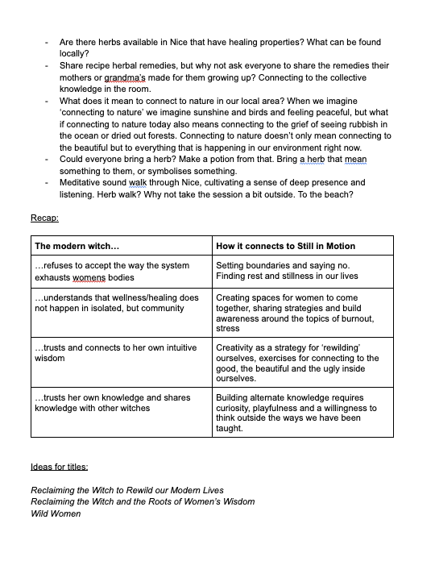
My initial notes, responses and summary of Mette's workshop.
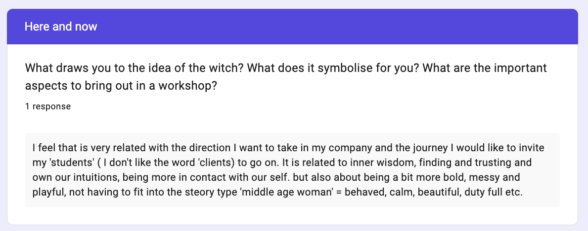
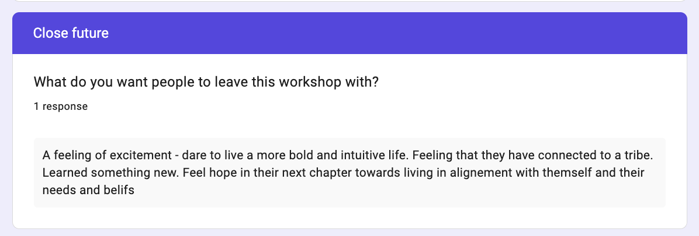
Questionnaire responses
Once I got Mette's responses back, we had a call to do some brainstorming together. Through this conversation we decided it would not just be one workshop but a three part series, turning it into a Witch Academy Journey instead of a single evening. We also realised that playfulness was the most crucial aspect of this event and by extension this needed to be felt in the copy.
After this, I could get to work and create the description for this fun workshop that immediately sold out.
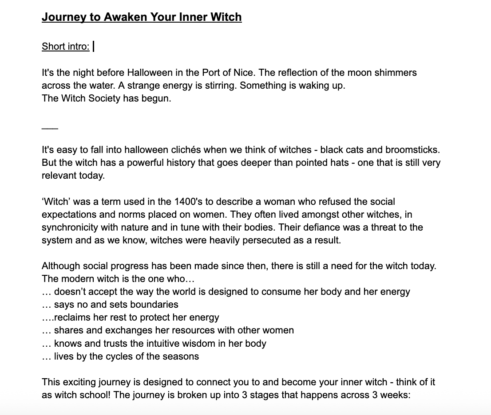
What this process has shown me so far is how COLLABORATIVE copywriting is. It's rare that the client hands over the document and I return the finished text. It's always a back and forth. Developing something with integrity and depth takes time! It requires not only revision on my side, but also that the client is willing to take the time needed to rethink, add detail and development, so the strength of the final result is not only determined by the quality of the words, but the idea itself.
I am also enjoying working with a client over a longer period. From months of writing for Mette now, I know her style and her services inside out, and how to really inject her personality into the writing.